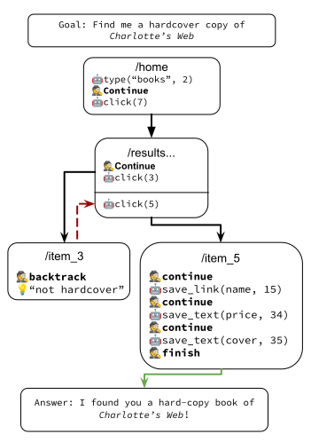

In the realm of web agent research, achieving both generalization and accuracy remains a challenging problem. Due to high variance in website structure, existing approaches often fail. Moreover, existing fine-tuning and in-context learning techniques fail to generalize across multiple websites. We introduce WILBUR, an approach that uses a differentiable ranking model and a novel instruction synthesis technique to optimally populate a black-box large language model’s prompt with task demonstrations from previous runs. To maximize end-to-end success rates, we also propose an intelligent backtracking mechanism that learns and recovers from its mistakes. Finally, we show that our ranking model can be trained on data from a generative auto-curriculum which samples representative goals from an LLM, runs the agent, and automatically evaluates it, with no manual annotation. WILBUR achieves state-of-the-art results on the WebVoyager benchmark, beating text-only models by 8% overall, and up to 36% on certain websites. On the same benchmark, WILBUR is within 5% of a strong multi-modal model despite only receiving textual inputs, and further analysis reveals a substantial number of failures are due to engineering challenges of operating the web.
Given the goal and the current state of the page, Wilbur repeatedly executes actions until the task is predicted to have finished or until backtracking is necessary.
At each step of the execution, Wilbur makes use of the following sub-modules:
TODO: include figure here for demonstration flow w/ example demonstrations
WILBUR is a graph traverserAfter an action is taken, WILBUR checks if the executed action achieved its intended step and is making progress toward the goal.
where
The reflector uses both a rule-based comparison algorithm that checks for state changes, and an LLM to compute the verdict. If the agent backtracks, it returns to the most recent observation that is safe to return to. Because the backend is real and not simulated, not all state changes can be reverted. In the current implementation, WILBUR returns to the most recent state that corresponded to a navigation (change in page URL). The new state is applied by that refreshing or navigating to that URL, which resets the DOM on the page. |
 |
TODO: add to autocurriculum
Include results summary
BibTex Code Here